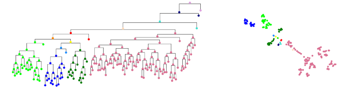
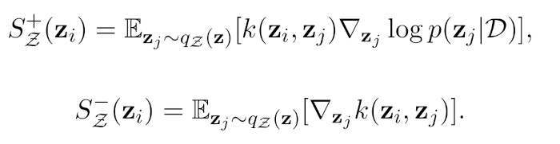

Deep probabilistic programming
My research group focuses on Deep Probabilistic Programming (DPP), which combines the modelling scope of deep learning with the principled treatment of uncertainity from Bayesian statistics. We apply DPP to problems in bioinformatics, notably protein folding and protein evolution, and other areas. We also develop new inference methods for DPP, notably based on Stein variational inference. My group is mostly using the deep probabilistic programming languages Pyro and NumPyro.
Deep generative models of protein structure
A recent comment on protein structure prediction in Nature Methods (2023) stated that "distributions of conformations are the future of structural biology". We are exploring the use of probabilistic programming, deep generative models and directional statistics to generate conformational ensembles. Bifrost is a deep generative model of protein structure fragments, implemented in Pyro. It is based on a Deep Markov Model, using directional statistics to represent dihedral protein angles. The models allows sampling of conformational ensembles for given protein sequence fragments. One of the ongoing projects of our group is to extend such a deep generative model to model the conformational space of entire proteins. Bifrost was published in ICML in 2021 and is currently used by the Danish AI-driven biotech company Evaxion to design multivalent vaccines based on epitope grafting.The figure below shows conformational ensembles of 9-residue fragments sampled from Bifrost, conditional on the sequence. The true structure is shown in yellow.

Deep generative models of proteins evolution
Another project we work on is deep generative models of protein evolution. Draupnir, also implemented in Pyro, is a deep probabilistic model of protein evolution that can be used for ancestral sequence reconstruction. The model makes use of a tree-structured Ornstein-Uhlenbeck process, obtained from a given phylogenetic tree, as an informative prior for a variational autoencoder and allows for modelling co-evolution of amino acid position (which most current models can't do). Draupnir was published in ICLR in 2022.The figure below shows a phylogenetic tree colored by clade to the left, and a two-dimensional projection of the corresponding latent variables representing sequences at each node. The latent variables inferred from the leaf sequences by Draupnir rfelect the shape of the phylogenetic tree well.

Stein variational inference for deep probabilistic programming
A distinct family of variational inference methods, called Stein variational inference (Stein VI) are subject of increasing interest by the ML community due to their enhanced flexibility as non-parametric particle-based methods. Their main advantage is that such methods can represent the uncertainty over the neural network parameters, even for large data sets and models. The core of Stein VI lies in the use of a set of particles as an approximating (i.e. variational) distribution. As such, Stein VI is particularly adept at capturing the rich correlations between latent variables. By virtue of its improved flexibility, Stein VI can sufficiently deal with non- Gaussianity and multi-modality, resulting in more accurate approximations of the posterior distribution, while maintaining the scalability of conventional VI methods. Stein VI approximates the Bayesian posterior using a mixture of point estimates represented by a set of particles, whereas SVI relies purely on single point estimates of the neural network parameters. The optimisation routine then involves minimising the KL divergence between the approximating and true posterior distributions via iterative updates of the particles’ positions according to the so-called Stein forces (see figure). The Stein forces consist of two terms, comprising an attractive force (+) pushing the particles towards the modes of the true posterior distribution, and a repulsive force (-) keeping the particles from each other so that they do not collapse to the same mode.
My group is working on Bayesian inference based on Stein mixtures. In Stein mixtures, each Stein particle serves as the parameters of a distribution, as in a conventional mixture model. PhD student Ola Rønning has contributed an implementation of Stein mixtures to Numpyro. He gives an overview of his work on Stein mixtures in this talk.High-performance deep probabilistic programming
We are exploring the use of the FUTHARK language to make the estimation of deep models of protein folding and other demanding applications of deep probabilistic programming tractable. Futhark is a functional data-parallel programming language. FUTHARK can be compiled to very efficient parallel code, running on either a CPU or GPU, and is intended to be used for small, performance-sensitive parts of larger applications, typically by compiling a Futhark program to a library that can be imported and used by applications written in conventional languages (in our case Python and Pyro/Numpyro). The language is developed at DIKU at the University of Copenhagen, in the PLTC section (which hosts my research group). This work is done in collaboration with Assoc. prof. Cosmin Oancea and Prof. Fritz Henglein.
thamelry@bio.ku.dk
Department of biology
Section for Computational and RNA Biology (SCARB)
Ole Maaløes Vej 5
DK-2200 Copenhagen N
and
Department of computer science
Programming languages and theory of computation section (PLTC)
Universitetsparken 5, HCØ, building B
DK-2100 Copenhagen Ø
University of Copenhagen
Denmark